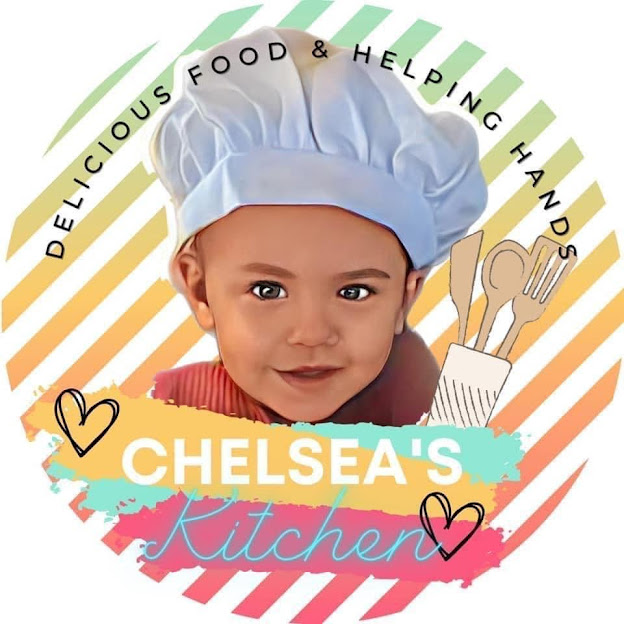
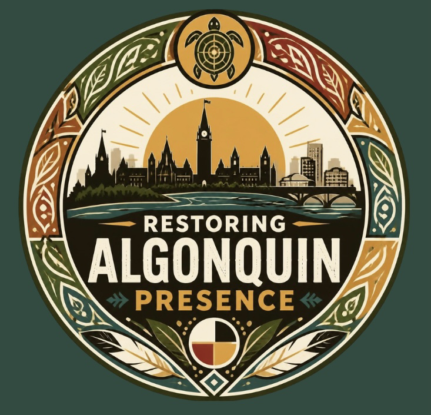

Welcome / Bienvenue

Chelsea’s Kitchen
Algonquin-inspired food, homemade with care. Offering workplace lunches, catering, and community food experiences across Ottawa.
Explore the kitchen
Restoring Algonquin Presence
Creating opportunities for Algonquin entrepreneurs through free access to busy Ottawa locations, mobile sales carts, business training, and community partnerships.
Explore RAP